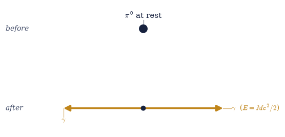
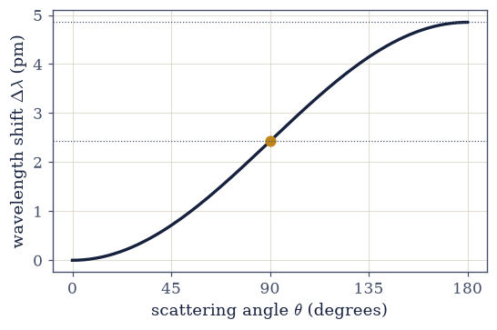
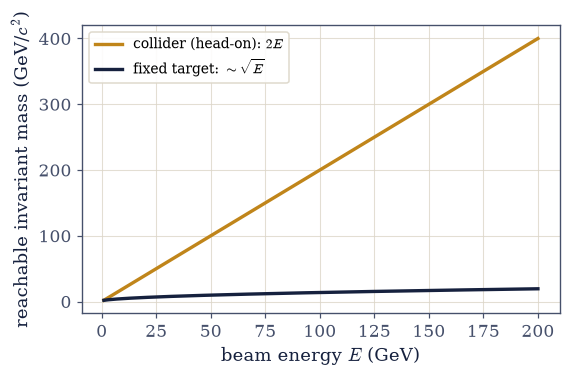

4.6 Relativistic Collisions and Decays#
Notebook overview#
§4.5 built the four-momentum and showed that its conservation is frame-independent.
This notebook turns that single law into a working tool for real particle physics. The
pattern never changes: conserve the total four-momentum \(\sum p^\mu\), then use the
invariant \(E^2-(pc)^2=(mc^2)^2\) to read off the physics. With nothing more than four-vector
arithmetic in numpy, we will fix the energies of decay products, define the invariant mass
that experimentalists use to discover particles, find the energy needed to create new
matter, and predict how light scatters off an electron.
Five problems carry the method. A particle decays, and conservation alone determines how its energy is shared. A set of particles has an invariant mass — the norm of their combined four-momentum — which is the same in every frame and shows up as a peak when a new particle is found. The center-of-momentum frame, where the total spatial momentum vanishes, is the natural place to analyze a collision. Creating new particles has a threshold, and for a beam on a fixed target that threshold is higher than naive mass-counting suggests, because momentum must be carried away — the calculation that set the size of the Bevatron. And Compton scattering, the wavelength shift of light bouncing off an electron, falls straight out of photon-plus-electron four-momentum conservation, the experiment that proved light carries momentum and a bridge toward the quantum mechanics of Volume VI.
We reuse the four-vector and np.einsum toolkit of §4.3 and §4.5 by cross-reference rather
than rebuilding it. Computations are in SI units, but particle masses and energies are
quoted in the field-standard \(\mathrm{MeV}/c^2\) and MeV with the conversion stated, since the
numbers (\(m_pc^2=938.3\,\)MeV, the antiproton threshold \(5630\,\)MeV, the Compton wavelength
\(2.43\,\)pm) are the recognizable landmarks. Collisions are discrete before/after events with
nothing to animate; the key figures are a momentum schematic and two faithful plots.
How to read the checks. Each exercise closes with a
validatecall against an independent fact: the photon energies solved from the conservation equations; the system invariant mass equal to the parent mass and frame-independent; the \(\Lambda\) daughters recoiling with equal momenta and reconstructing the parent; the COM frame having zero total momentum; the antiproton threshold derived numerically as \(6m_pc^2\); the Compton recoil electron reconstructed on-shell. A ✓ is strong evidence; a ✗ is a prompt to locate the discrepancy, not a verdict.Scope. Relativistic kinematics via four-momentum conservation; dynamics in fields is §4.7. See Nolting, Theoretical Physics 4 [Nol17]; Taylor & Wheeler, Spacetime Physics [TW92]; Griffiths, Introduction to Elementary Particles; and §4.5 (four-momentum and the invariant) and §3.10 (radiation carries momentum).
Theory in brief#
Conservation of four-momentum#
In any interaction the total four-momentum is conserved — energy and momentum together, in every frame,
Applied with the invariant \(E^2-(pc)^2=(mc^2)^2\) of §4.5, this one law solves a remarkable range of problems by four-vector arithmetic.
Particle decay#
A parent of mass \(M\) at rest has \(p^\mu=(Mc,\mathbf 0)\), so its products must carry total momentum zero and total energy \(Mc^2\). For two products this fixes their energies uniquely,
Conservation determines the kinematics; there is no freedom left.
The invariant mass of a system#
A set of particles has a total four-momentum whose norm defines the system’s invariant mass,
the same in every frame. For decay products it equals the parent’s mass, and is precisely the quantity an experimentalist reconstructs — the “invariant-mass peak” that announces a particle.
The center-of-momentum frame#
The COM frame is the one where the total spatial momentum is zero. There the total energy is the invariant mass times \(c^2\),
One boosts into it, solves the kinematics there, and boosts back.
Collision thresholds#
To create new particles, the system’s invariant mass must reach the total rest mass of the products, all at rest in the COM at threshold. For a beam on a stationary target this costs more than the products’ rest energy, because momentum must be conserved,
The extra factor is the kinetic energy the products must keep — the number the Bevatron was built to reach.
Compton scattering#
A photon scattering off a free electron shifts wavelength by
where \(h/m_ec=2.43\,\)pm is the Compton wavelength. It follows from four-momentum conservation with the massless-photon relation \(E=pc\) of §4.5, and proved that light carries momentum like a particle — a forward pointer to quantum mechanics.
Setup#
Data and instruments only: the CODATA constants that fix \(c=1/\sqrt{\mu_0\varepsilon_0}\), the particle masses and the MeV, the series palette, the Minkowski metric \(\eta=\mathrm{diag}(-1,1,1,1)\) that fixes this notebook’s signature, the metric contraction \(\eta_{\mu\nu}p^\mu p^\nu\) and the \(4\times4\) boost — both built from scratch in §4.3 and reused here — and the one-line rearrangement of the §4.5 invariant that returns \(|\mathbf p|\) from \(E\) and \(m\). The quantity this notebook is about is not here: you write the invariant mass of a system in Exercise 2, and every reconstruction, threshold, and Compton recoil afterwards runs on it. No randomness appears anywhere in this notebook.
The Setup below holds this notebook’s data and instruments — nothing you are asked to build. It is collapsed so the building stays yours; expand it whenever you want the details.
Exercise 1 — Decay into two photons (worked)#
Begin with the simplest decay. A neutral pion (\(\pi^0\), mass \(135\,\mathrm{MeV}/c^2\)) at rest decays into two photons, \(\pi^0\to2\gamma\). The parent’s four-momentum is \((Mc,\mathbf 0)\), so four-momentum conservation Eq. 358 forces the two photons to fly off back-to-back with equal energies, and that shared energy must be exactly half the rest energy, \(E_\gamma=\tfrac12Mc^2\) Eq. 359 (Fig. 368). Conservation alone fixes everything.
Rather than assert that split, treat the two photon energies as unknowns and let conservation find them. Energy demands \(E_1+E_2=Mc^2\); momentum, with \(p=E/c\) along \(\pm x\), demands \(E_1-E_2=0\). That is a linear system of two equations in two unknowns, and its solution is the decay.
Part a) Solve those two conservation equations with numpy.linalg.solve and confirm the
solution is \(E_1=E_2=\tfrac12Mc^2\).
Part b) Assemble the photon four-momenta \((E/c,\pm E/c,0,0)\) from the energies just
solved for, and confirm with np.allclose that their sum equals the parent’s
\((Mc,\mathbf 0)\) — energy and momentum conserved together.
π⁰ rest energy Mc² = 135.0 MeV
conservation solves to E1 = 67.50, E2 = 67.50 MeV (= Mc²/2 each)
Σp_final = [7.21478609e-20 0.00000000e+00 0.00000000e+00 0.00000000e+00]
p_parent = [7.21478609e-20 0.00000000e+00 0.00000000e+00 0.00000000e+00]
four-momentum conserved: True
Validation 1#
✓ four-momentum is conserved in the decay (energy and momentum together) [max|Δ| = 0 (rtol=1e-09, atol=1e-09)]
✓ solving the conservation equations gives each photon E = Mc²/2 [max|Δ| = 0 (rtol=1e-12, atol=1e-09)]
True

Fig. 368 The decay \(\pi^0\to2\gamma\), before and after. Before (top): the parent pion sits at rest, carrying four-momentum \((Mc,\mathbf 0)\) — energy but no momentum. After (bottom): two photons fly off back-to-back with equal and opposite momenta (amber), so the total momentum stays zero, and each carries half the rest energy, \(E_\gamma=\tfrac12Mc^2=67.5\,\)MeV. Four-momentum conservation alone fixes the energies and directions.#
Exercise 2 — The invariant mass of a system (worked)#
Here is the concept that makes particle discovery possible. A set of particles has a total four-momentum, and its norm defines an invariant mass \(M_{\rm sys}c^2=\sqrt{E_{\rm tot}^2- (p_{\rm tot}c)^2}\) Eq. 360, the same in every frame. For the two photons of Exercise 1 it must equal the parent pion’s mass — and crucially, it stays equal even when we view the photons from a moving frame, where their individual energies change. This is exactly how an unstable particle is found: not seen directly, but reconstructed as a peak in the invariant mass of its decay products.
In the signature \((-,+,+,+)\) that the Setup’s \(\eta\) fixes, the norm of a timelike four-momentum is negative, \(\eta_{\mu\nu}p^\mu p^\nu=-(mc)^2\), so the mass is recovered as \(M=\sqrt{-\eta_{\mu\nu}p^\mu p^\nu}/c\) — negate before the root, then divide by \(c\) to land in kilograms rather than kg·m/s. Every later exercise in this notebook reads its physics off this one quantity.
Part a) Write invariant_mass(p_total), returning the invariant mass
Eq. 360 of a four-momentum (or of a sum of several) built on the
Setup’s four_norm.
Part b) Apply it to the two-photon system of Exercise 1 and confirm it equals the pion mass \(M\).
Part c) Boost both photons into a frame moving at \(0.6c\) (boost4, the matrix product
@) and confirm the invariant mass is unchanged though each photon’s energy is not.
invariant mass (rest frame) = 135.000 MeV/c²·c² → 135.0 MeV
parent π⁰ mass = 135.0 MeV
photon energies in the 0.6c frame: 33.75, 135.00 MeV (changed)
invariant mass in the 0.6c frame = 135.0 MeV (unchanged)
Validation 2#
✓ the invariant mass of the decay products equals the parent mass, in any frame [max|Δ| = 4.48416e-44 (rtol=1e-09, atol=1e-09)]
True
Exercise 3 — Decay into two unequal masses (worked)#
When the two products have different masses the energy is shared unequally, but conservation still fixes the split exactly. The classic example is the decay of a \(\Lambda\) baryon (\(1116\, \mathrm{MeV}/c^2\)) into a proton (\(938\,\mathrm{MeV}/c^2\)) and a pion (\(140\,\mathrm{MeV}/c^2\)). Energy and momentum conservation give the daughter energy \(E_1=(M^2+m_1^2-m_2^2)c^2/(2M)\) Eq. 359, with \(E_2\) following by symmetry, and the two must sum to the parent rest energy \(Mc^2\) while each stays above its own rest energy.
The sharp test of a proposed split is not the energy sum, which the formula pair satisfies identically whatever its numerator, but momentum: the daughters recoil back-to-back, and the invariant ties \(|\mathbf p|\) to \(E\) and \(m\), so only the correct energies make the two momentum magnitudes agree.
Part a) For \(\Lambda\to p+\pi^-\), evaluate \(E_1\) and \(E_2\) from Eq. 359 as explicit
numpy arithmetic.
Part b) Confirm the split passes the momentum test: the Setup’s momentum_of(E1, m1) and
momentum_of(E2, m2) must agree.
Part c) Assemble the two daughter four-momenta with those momenta, back-to-back along
\(\pm x\), and confirm with the invariant_mass you wrote in Exercise 2 that their sum
reconstructs the parent mass \(M\).
Part d) Check the two remaining necessary conditions: \(E_1+E_2=Mc^2\), and each daughter energy at least its own rest energy \(m_ic^2\).
Λ → p + π⁻: Mc² = 1116 MeV
E_proton = 943.41 MeV (rest 938 MeV)
E_pion = 172.59 MeV (rest 140 MeV)
E1 + E2 = 1116.0 MeV = Mc²: True
|p_p| = 100.93, |p_π| = 100.93 MeV/c (back-to-back match)
invariant mass of the pair = 1116.0 MeV (= Mc²)
Validation 3#
✓ the daughters recoil with equal momenta and reconstruct the parent mass [max|Δ| = 3.55271e-15 (rtol=1e-09, atol=1e-09)]
✓ the daughter energies sum to the parent rest energy [got 1.78803e-10 vs expected 1.78803e-10 (rtol=1e-09, atol=1e-09)]
✓ each daughter energy is at least its rest energy
True
Exercise 4 — The center-of-momentum frame (worked)#
Collisions are simplest to analyze in the center-of-momentum frame, where the total spatial momentum vanishes Eq. 361. Given a system with nonzero total momentum, the boost that reaches the COM has \(\beta_{\rm COM}=p_{\rm tot}c/E_{\rm tot}\), and in that frame the entire energy budget is the invariant mass, \(E_{\rm tot}^{\rm COM}=M_{\rm sys}c^2\) — no energy is “tied up” in bulk motion. This is the natural workshop for collision kinematics: boost in, solve, boost back.
In four-momentum components the boost speed is a ratio already sitting in the total: \(\beta_{\rm COM}=p_{\rm tot}c/E_{\rm tot}=p^1_{\rm tot}/p^0_{\rm tot}\). The system below is two protons, one at rest and one carrying \(2\,\)GeV of kinetic energy.
Part a) Form the total four-momentum of the two protons, taking \(|\mathbf p|\) of the beam
proton from its energy with the Setup’s momentum_of.
Part b) Boost that total by \(\beta_{\rm COM}\) with boost4 and confirm the total spatial
momentum vanishes in the new frame.
Part c) Confirm the energy left there equals the invariant mass times \(c^2\) — no energy
tied up in bulk motion — using the invariant_mass from Exercise 2.
β_COM = 0.7183
total spatial momentum in COM = 0.000e+00 kg·m/s (→ 0)
E_COM = 2697.1 MeV
M_sys c² = 2697.1 MeV (equal)
Validation 4#
✓ the COM frame has zero total spatial momentum (residual ≪ the incoming momentum) [got 0 vs expected 0 (rtol=1e-06, atol=1.48808e-27)]
✓ in the COM frame the total energy equals the invariant mass × c² [got 4.32128e-10 vs expected 4.32128e-10 (rtol=1e-09, atol=1e-09)]
True
Exercise 5 — Collision threshold: antiproton production (worked)#
To create new matter in a collision, the system’s invariant mass must reach the total rest mass of the products Eq. 362. The 1955 discovery of the antiproton used the reaction \(p+p\to p+p+p+\bar p\) — four particles out, each of mass \(m_p\), so the invariant mass must reach \(4m_pc^2\). The subtlety, and the reason the Bevatron had to be so large, is that for a beam on a stationary target the products cannot all be at rest in the lab: total momentum must be conserved, so they must keep moving. Working through the invariant mass, the required beam kinetic energy is \(T=6m_pc^2\), three times the naive \(2m_pc^2\) one might guess from the new particles’ rest energy alone.
The point is to derive that number rather than quote it. The system’s invariant mass grows monotonically with the beam kinetic energy \(T\), from \(\sqrt6\,m_p\) at \(T=m_pc^2\) to \(\sqrt{24}\,m_p\) at \(T=10\,m_pc^2\), so \([1,10]\,m_pc^2\) brackets the root of \(M_{\rm sys}(T)=4m_p\) and a bracketing solver can find it.
Part a) Write invariant_mass_at(T), the system’s invariant mass as a function of the
beam kinetic energy: beam four-momentum \((E/c,p,0,0)\) with \(E=T+m_pc^2\), plus a stationary
target \((m_pc,0,0,0)\), passed through the invariant_mass you wrote in Exercise 2.
Part b) Solve \(M_{\rm sys}(T)=4m_p\) on that bracket with scipy.optimize.brentq and
confirm the root is \(T=6m_pc^2\approx5630\,\)MeV.
Part c) Confirm the invariant mass indeed reaches \(4m_p\) at the derived threshold — all four products at rest in the COM frame, which is what “threshold” means.
derived threshold T = 5629.6 MeV = 6.000000 m_p c²
invariant mass reached = 4.0000 m_p (target: 4 m_p, all products at rest in COM)
a naive guess (2 m_p c²) would be 1877 MeV — too low by a factor 3
Validation 5#
✓ the numerically derived antiproton threshold is T = 6 m_p c² (not 2 m_p c²) [got 9.01967e-10 vs expected 9.01967e-10 (rtol=1e-06, atol=1e-09)]
✓ at the derived threshold the invariant mass reaches 4 m_p [got 6.69049e-27 vs expected 6.69049e-27 (rtol=1e-06, atol=1e-09)]
True
Exercise 6 — Compton scattering (worked)#
A photon scattering off a free electron changes wavelength, and the shift follows entirely from four-momentum conservation between the photon and the electron, using the massless relation \(E=pc\) of §4.5. The result is \(\Delta\lambda=(h/m_ec)(1-\cos\theta)\) Eq. 363, where \(h/m_ec=2.43\,\)pm is the Compton wavelength and \(\theta\) is the scattering angle: no shift straight ahead (\(\theta=0\)), one Compton wavelength at \(90^\circ\), and the maximum of two at backscatter (\(\theta=180^\circ\)) (Fig. 369). A classical wave would not change wavelength on scattering; the shift is direct evidence that light carries momentum like a particle.
Written in energies rather than wavelengths, conservation between the photon and the electron reads \(1/E'-1/E_0=(1-\cos\theta)/m_ec^2\), which is Eq. 363 after \(\lambda=hc/E\). The incident photon below carries \(0.5\,\)MeV and is examined at \(\theta=0^\circ\), \(90^\circ\), and \(180^\circ\). Whatever four-momentum the photon does not keep, the electron must carry, and a physical electron is on-shell: its four-momentum has invariant mass exactly \(m_e\). Were the Compton formula wrong, the reconstructed recoil would come out off-shell — which makes that reconstruction a far sharper test than re-plotting the formula against itself.
Part a) Solve the conservation relation for the scattered energy \(E'\) at the three angles, convert to wavelengths with \(\lambda=hc/E\), and form the shift \(\Delta\lambda\).
Part b) Reconstruct the recoil electron’s four-momentum
\(p_e'=p_\gamma+p_e-p_\gamma'\), with the scattered photon at angle \(\theta\) in the \(xy\)-plane,
and confirm with the invariant_mass from Exercise 2 that it is on-shell at every angle.
Part c) Confirm the backscatter shift is twice the Compton wavelength \(h/m_ec\).
Compton wavelength h/(m_e c) = 2.426 pm
θ Δλ (pm) (h/m_e c)(1−cosθ) (pm) recoil mass (m_e)
0° 0.0000 0.0000 1.000000
90° 2.4263 2.4263 1.000000
180° 4.8526 4.8526 1.000000
backscatter shift = 2.000 × Compton wavelength
Validation 6#
✓ the reconstructed recoil electron is on-shell (invariant mass m_e) at every angle [max|Δ| = 1.75162e-46 (rtol=1e-09, atol=1e-09)]
✓ the backscatter (180°) shift is twice the Compton wavelength [got 4.85262e-12 vs expected 4.85262e-12 (rtol=1e-06, atol=1e-09)]
True

Fig. 369 The Compton wavelength shift \(\Delta\lambda=(h/m_ec)(1-\cos\theta)\) against scattering angle. The shift is zero for forward scattering (\(\theta=0\)), rises through one Compton wavelength \(h/m_ec=2.43\,\)pm at \(90^\circ\) (amber dot), and reaches its maximum of two Compton wavelengths at backscatter (\(\theta=180^\circ\)). The dependence on angle, and the fixed scale set by the electron mass, are exactly what four-momentum conservation predicts and what a classical wave cannot explain.#
Exercise 7 — A collider versus a fixed target (student)#
Threshold reasoning explains why modern machines collide beams instead of firing at a fixed target. The quantity that matters is the invariant mass reachable, since that is what bounds the masses one can create. For a beam of energy \(E\) on a stationary target the invariant mass grows only as \(\sqrt{E}\) — most of the beam energy goes into the bulk motion of the products, not into new mass. But for two beams of energy \(E\) colliding head-on, the total momentum is already zero, so the lab is the COM frame and the entire \(2E\) becomes invariant mass, growing linearly with \(E\) Eq. 361 (Fig. 370). At high energy the collider wins enormously.
The beam below carries \(E=100\,\)GeV, and the two scalings are separated by comparing the fixed-target reach at \(E\) with the reach at \(4E\): a \(\sqrt{E}\) law doubles it, a linear law would quadruple it.
Part a) For a proton beam of energy \(E\) on a stationary proton, form the total
four-momentum and compute its invariant mass with the invariant_mass you wrote in
Exercise 2.
Part b) Do the same for two protons of energy \(E\) colliding head-on, and confirm the result is \(2E/c^2\) — the whole energy budget turned into invariant mass.
Part c) Confirm the fixed-target reach scales as \(\sqrt{E}\) by quadrupling the beam energy: the reach should grow by a factor \(2\), not \(4\).
beam energy E = 100 GeV
fixed target: invariant mass = 13.76 GeV (~√E)
collider: invariant mass = 200.00 GeV (= 2E/c²)
quadrupling E multiplies fixed-target reach by 1.993 (≈2=√4, the √E law)
Validation 7#
✓ head-on collisions put all the energy into invariant mass (2E/c²) [got 3.56532e-25 vs expected 3.56532e-25 (rtol=0.001, atol=1e-09)]
✓ the fixed-target invariant mass scales as √E (quadrupling E doubles it) [got 1.99302 vs expected 2 (rtol=0.01, atol=1e-09)]
True

Fig. 370 Reachable invariant mass versus beam energy, for a collider (amber) and a fixed target (dark), for protons. The head-on collider converts all the energy into invariant mass, growing linearly as \(2E\); the fixed target wastes most of the energy on the recoil motion the products must carry, so its reach grows only as \(\sqrt{E}\). The gap widens without bound, which is why every high-energy machine since the 1970s collides beams rather than striking a fixed target.#
Exercise 8 — One law, all the kinematics#
Look back at the variety of problems just solved: a pion’s decay, the invariant mass that finds new particles, the energy sharing of unequal daughters, the center-of-momentum frame, the antiproton threshold, the Compton shift, the case for colliders. Every one yielded to the same two ingredients — conservation of the total four-momentum, and the invariant \(E^2-(pc)^2= (mc^2)^2\). Relativistic kinematics, for all its reputation, is four-vector bookkeeping: assemble the four-momenta, conserve their sum, and contract with the metric to read off masses and energies. The physics lives in those two lines.
Part a) Close with the unifying check: confirm with np.allclose that across three
different problems — the two-photon decay, the two-proton system, and the antiproton-threshold
system — the total four-momentum’s invariant mass is exactly what conservation demands
(\(M_\pi\), the COM energy \(E_{\rm COM}/c^2\) measured by boosting in Exercise 4, and \(4m_p\)
respectively), the single quantity that carried every calculation.
invariant-mass ratios (should all be 1): [1. 1. 1.]
one law — four-momentum conservation — carried every calculation: True
Validation 8#
✓ one conservation law and one invariant solved decays, COM, thresholds, and scattering
True
Notebook summary#
Conservation of four-momentum Eq. 358, Eq. 359: for \(\pi^0\to2\gamma\) the photons are back-to-back with \(E_\gamma=Mc^2/2=67.5\,\)MeV, and \(\sum p^\mu\) is conserved (energy and momentum together) by
np.allclose.Invariant mass Eq. 360: \(\sqrt{E_{\rm tot}^2-(p_{\rm tot}c)^2}/c^2\) of the decay products equals the parent mass and is unchanged by a \(0.6c\) boost — the invariant-mass peak that finds particles. For \(\Lambda\to p+\pi^-\) the daughter energies (\(943\) and \(173\,\)MeV) sum to \(Mc^2\).
The COM frame Eq. 361: boosting by \(\beta_{\rm COM}=p_{\rm tot}c/E_{\rm tot}\) zeroes the total momentum, and there \(E_{\rm tot}=M_{\rm sys}c^2\).
Thresholds Eq. 362: \(p+p\to p+p+p+\bar p\) needs \(T=6m_pc^2\approx5630\,\)MeV — derived numerically by solving \(M_{\rm sys}(T)=4m_p\) with
scipy.optimize.brentq— three times the naive \(2m_pc^2\), because momentum must be carried away: the Bevatron number.Compton scattering Eq. 363: four-momentum conservation gives \(\Delta\lambda= (h/m_ec)(1-\cos\theta)\), zero forward and \(2\times2.43\,\)pm at backscatter, the reconstructed recoil electron exactly on-shell — proof that light carries momentum. Colliders beat fixed targets because head-on invariant mass grows as \(2E\), not \(\sqrt{E}\).
One conservation law and one invariant solved every problem: assemble four-momenta, conserve the sum, contract with the metric.
Outlook#
The relativistic Lagrangian and motion in fields (§4.7). Charges moving in an electromagnetic field, tying back to the field tensor \(F^{\mu\nu}\) of §3.12.
Mandelstam variables and the systematic kinematics of scattering (a pointer).
Particle physics in practice. Thresholds, resonances, and the invariant-mass peak as a discovery tool — the method behind real detector analyses.
The bridge to quantum mechanics. Compton scattering and photon momentum point straight to the quantum mechanics of Volume VI.
Cross-reference §4.5 (four-momentum and the invariant) and §3.10 (radiation carries momentum).